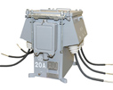
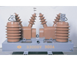
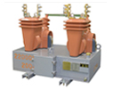
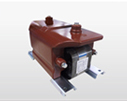
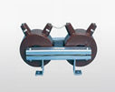

計器用変成器一筋に取り組んできた技術基盤をもとに、新しい電気利用技術の開発に向けて日々挑戦を続けています。変成器分野での基礎となる電磁誘導技術や開発･製造段階で培ってきたモールド樹脂注型技術、絶縁技術などの専門技術を駆使して、新時代のニーズに対応した受変電機器を受注から設計･生産･検査･納入まで一貫して取り組んでいます。
●変成器（ＶＴ，ＣＴ）類
6kVモールド計器用変圧変流器
22kV、33kVモールド計器用変圧変流器
6kVモールド変流器
6kVモールド接地型計器用変圧器
22kV油入接地型計器用変圧器
●変圧器(電力供給、受電用)
低圧モールド変圧器
●変成器(特高・高圧・低圧)修理業務
電力量計と組み合わせて使用する変成器の修理
●その他
自動区分開閉器制御電源用モールド変圧器
引込開閉器制御電源用モールド変圧器
進相コンデンサ用モールド放電コイル

6KVモールド計器用
変圧変流器

33KVモールド計器用
変圧変流器

22KVモールド計器用
変圧変流器
（コンパクト型）

自動区分開閉器
制御電源用
モールド変圧器

進相コンデンサ用
モールド放電コイル
33KVの特別高圧設備から高層マンション用の低圧モールド変圧器、オフィスビルの分電盤にいたるまで、高度なモールド樹脂注型技術を活用して省スペース化･軽量化･低コスト化を実現した各種トランスを提供しています。街づくりや電力系統構成にあわせた電力変換機器をオーダーメイドで製造するなど、お客さまのニーズにあわせたエネルギー変換の最適化を目指しています。お気軽にご相談ください。
トランス事業部長